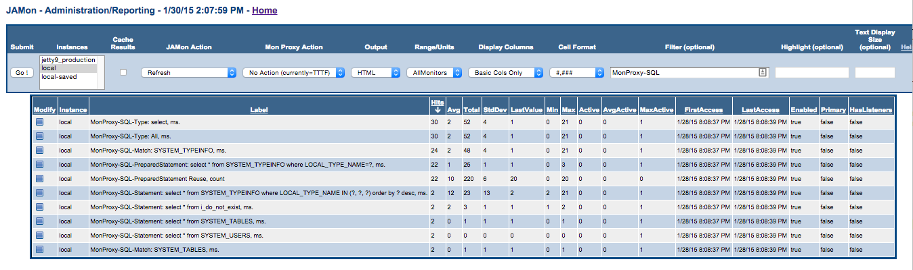

One of the most powerful aspects of JAMon 2.1 is that it can track performance for all queries issued by an application (see 'Monitoring SQL Commands - JAMon Summary Statistics') and allow developers to view all recent queries that have executed in a rolling buffer (see 'Monitoring SQL Commands - Details'). In addition it can track JDBC method calls to Statements, ResultsSets and Connections and track any exceptions they throw.
The home screen of the JAMon web application allows you to generate and monitor SQL traffic to play with the capabilities without configuring your own database connection. The data in the screens below was generated this way, and the screen snapshots were taken from the JAMon web application too.
The JAMon JDBC driver allows developers to monitor JDBC/SQL without changing any code. The JAMonDriver class is com.jamonapi.proxy.JAMonDriver and representative URLS follow. Note JAMon simply sits in front of the the real JDBC driver (jamonrealdriver) intercepts calls and then reroutes the calls to the real driver.
JDBC Syntax Without JAMon: An example of how to connect to a database using a JDBC driver follows (The example uses Sybase, but any vendors driver would do)
Class.forName("com.sybase.jdbc2.jdbc.SybDriver");
String url = "jdbc:sybase:Tds:MyServerDNS:2638";
Connection conn = DriverManager.getConnection(url, user, passWord);
JDBC Syntax With JAMon: The following code will use JAMon as a proxy to track performance, but uses the underlying driver to perform the queris
(The example uses Sybase, but any vendors driver would do). Note no code changes would be required if connection strings were placed in a configuration
file. The JAMon jar file must also be placed in the classpath.
Class.forName("com.jamonapi.proxy.JAMonDriver");
String url = "jdbc:jamon:sybase.Tds:MyServerDNS:2638?jamonrealdriver=com.sybase.jdbc2.jdbc.SybDriver";
Connection conn = DriverManager.getConnection(url, user, passWord);
Note JAMon simply removes 'jamon', and 'jamonrealdriver=XXXX' from the url, so the url should work with the underlying driver when they are removed. Note the '?' above is not part of JAMon syntax, but instead part of the underlying Sybase driver syntax. In the Oracle example below, there is no delimiter between 'jamonreaddriver' and the previous part of the oracle driver, which looks odd, but it is appropriate.
Class.forName("com.jamonapi.proxy.JAMonDriver");
String url = "jdbc:jamon:oracle:thin:@dbms:1521:DBjamonrealdriver=oracle.jdbc.OracleDriver";
Connection conn = DriverManager.getConnection(url, user, passWord);
A number of different JAMon summary statistics will be kept for each query executed from a monitored Statement/PreparedStatement/CallableStatement. JAMon labels for SQL summary statistics begin with: MonProxy-SQL. These summary statistics allow developers to see how many times a query has been executed, what its time statistics are (avg/total/min/max/...), whether or not it is currently executing and if so how many times, and more.
For each SQL command the following JAMon summary labels will appear in the JAMonAdmin report.
SQL summary statistics are viewable via jamonadmin.jsp. as this screen snapshot shows.

The details of the most recent N SQL commands issued are kept in a rolling buffer and are viewable via sql.jsp. The SQL buffer size is configurable via the web page, and defaults to the most recent 100 queries.
Each row in the report represents a recently executed SQL command. By default the report is sorted with the most recent queries showing at the top. Each row contains the following columns
SQL details are viewable via sql.jsp which is available from the JAMon web application home screen. This is a screen snapshot of sql.jsp

JDBC interface monitoring has all the capabilities mentioned in interface monitoring, but also a few extra capabilities.
import com.jamonapi.proxy.*; // The MyObject() class has to implement MyInterface for monitoring to work. Connection monitoredConnection = MonProxyFactory.monitor(originalConnection);
import com.jamonapi.proxy.*; // The MyObject() class has to implement MyInterface for monitoring to work. Connection monitoredConnection = MonProxyFactory.monitor(originalConnection); // The following is not needed to monitor a Statement. The statement is automatically monitored due to its connection being monitored Statement statement=MonProxyFactory.monitor(monitoredConnection.createStatement());
This is a screen snapshot of of the type of information that can be seen in jamonadmin.jsp. Methods and Exceptions are annotated in the example below.